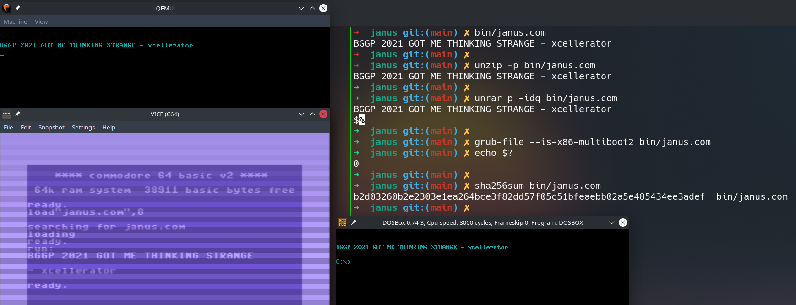

Janus: A Polyglot Binary for BGGP 2021
This year, @netspooky announced another round of the Binary Golf Grand Prix. If you missed it last year, the challenge was to create a palindromic binary - you can see the writeup of my entry, BootNoodle, here. This time around, the theme was polyglots, i.e. the challenge was to create a binary (as small as possible - hence the Golf part…) that was simulateously another filetype.
The rules were laid out very clearly into 2 categories: first - the smallest file that satisfied all the rules wins; second - rack up points by overlapping more and more filetypes with the bytes of your host binary. I felt more attracted to the second category due to the possibility of getting creative with fileformats and parsers.
The Result⌗
I went into this having never created a polyglot before. The closest I’d been to them is Ange Albertini’s brilliant collection of articles in PoC||GTFO. However, theory and practice are very different things, so it took me a while to get things going.
Ultimately, I ended up with a 512-byte file that is simultaneously an x86 bootloader, COM executable, ELF, ZIP, RAR, GNU Multiboot2 Image and Commodore 64 PRG executable named janus.com. You can find the completed file (and NASM source) on Github.

x86 Bootloader⌗
For the “host binary”, I chose to go with an x86 bootloader again (as I did last year). I did this for two reasons: 1, they’re essentially structureless (apart from 55 AA in bytes 511 and 512) and 2, it gave me a nice limitation of 512 bytes to work with. Even for category 2, the rules mandated that entries be kept under 4kb. This left me with a well-defined problem to see how many filetypes I could cram into 512 bytes.
The main thing to know about bootloaders, is that (as long as aforementioned 55 AA appears at the end), execution will always begin at offset 0. In other words, the initial bytes of janus.com must be executable as 16-bit x86 opcodes. We’ll need to keep this in mind if we want to incorporate a filetype that has a hard requirement at the beginning of the file (e.g. an ELF).
I decided to have the bootloader simply print a string to the screen. The actual opcodes don’t take up much room; all they really do is setup registers and call BIOS routines via interrupts. What’s more important is the string that is printed. In general, code is small, data is big. For any other filetypes that I manage to incorporate into these 512 bytes, I want to reuse the string that’s already going to be present in this binary. That way, I “only” have to worry about structures and instructions, rather than having to squeeze in more data.
For more info on 16-bit assembly, checkout my BGGP entry from last year: BootNoodle.
Put simply, the bootloader will move the cursor to the top-left of the screen, change the foreground colour to cyan (because why not?) and print the string “BGGP 2021 GOT ME THINKING STRANGE - xcellerator”.
To test the bootloader, simply run qemu-system-x86_64 janus.com.
COM⌗
Fortunately, bootloaders and COM files have a lot in common. You could almost say they’re the same file format. Which is funny, because they actually are the same file format (except you don’t need the 55 AA at the end). COM files are just pure opcodes/data without any real structure to them other than execution starting at offset 0x0.
So what’s there to actually do? Well, in order to print our string to the screen, we were using a BIOS routine in interrupt 0x10 to write bytes to page 0 of memory. DOS has a different memory layout, and the DOS equivalent of STDOUT doesn’t correspond to page 0, so this interrupt appears to have no effect and the string isn’t printed. If we want to print a string in DOS, we can use a different routine from the DOS interrupt 0x21. The cool thing is that this interrupt isn’t mapped to anything in BIOS-mode, so we can just write our printString routine to use interrupt 0x21 first, and then interrupt 0x10. If we’re running in the BIOS, only the latter will do anything, and if we’re running in DOS, only for former has any (visual) effect!
The other thing we have to keep in mind is that strings are $-terminated in DOS, so we have to slap another character onto the end of our string. This won’t affect the ELF/ZIP/Bootloader/PRG output because we can set string length for all of those. Unfortunately we don’t have the same luxury with RAR and can’t have a random $ which doesn’t do anything - that’s why the $ appears only in the RAR output.
Ultimately, the printString routine at offset 0x8a looks like this:
; DOS Version
push cs ; Set CS=DS
pop ds
mov dx, 0x111 ; Offset to string
mov ah, 0x9 ; Write string to stdout
int 0x21 ; DOS Interrupt
mov ax, 0x4c02 ; 0x4c=Exit, 0x02=Ret Val
int 0x21 ; DOS Interrupt
; BIOS Version
pusha
.loop:
lodsb ; Load char in (SI) to AL
test al, al ; Check for null-byte
jz .end
call printChar ; Print the char
call delay ; Cheap animation effect
jmp .loop
.end:
popa
jmp waitForKeypress ; Go wait for a keypress
Lastly, DOS won’t execute a file as a COM unless it has the .com extension - hence why the file is called janus.com!
To test the COM executable, run it in DOSBox with dosbox janus.com.
ELF⌗
The ELF format has been documented time and time again over the years. For a recent (and very relevant!) overview, take a look at my article Dead Bytes from tmp.0ut Issue 1. The key things that we need are an ELF header (which must start at offset 0x0) and a program header, which contains information about where the opcodes are and where to load them to begin execution.
Typically, the program header immediately follows the ELF header, but it needn’t be the case (e_phoff in the ELF header gives the offset to the start of the program header). That gives us a bit of flexibility - the 64-bit ELF and program headers are 64 and 56 bytes respectively. This means that (structure-wise) we’re pretty much tied in to the first 64 bytes of our file, and have to reserve some 56 bytes of space somewhere later on (plus some 64-bit x86 opcodes to actually do something).
However, we have a few tricks up our sleeve! In sheer defiance of the ELF spec, the Linux loader cares very little about a lot of the fields in these two headers. Aside from a few important fields, we’re free to fill much of these structures with other content that is simply ignored during execution. In my case, I’ve got some Commodore 64 BASIC instructions and a 16-bit x86 routine for the bootloader to use (printChar).
One of the fields that we can’t mess around with is the ELF magic at offset 0x0: \x7fELF. Do you remember what was said about x86 bootloaders? Execution starts from offset 0x0! This means that during bootloader execution, 7F 45 is in line to be executed as 16-bit opcodes! This is where it could’ve all fallen apart, but luckily 7F 45 translates to jg 0x47 in x86 assembly. Basically, when the ELF magic is “executed” in the context of a bootloader, execution will jump straight to offset 0x47 in the file. This gives both frees us from, and provides us with, another constraint: offset 0x47 now needs to either be the start of our 16-bit instructions, or another jump to those 16-bit instructions. In my case, I just have a call 0x1b0 instruction at offset 0x47 (3 bytes total) to keep things simple.
So, we’ve got the ELF header in place, but what about the program header? We can’t follow the ELF header immediately at 0x40 because we’ve already got a constraint at 0x47 (7 bytes into the program header is part of the p_flags field, which we unfortunately can’t mess with). This means we’ve got a few bytes of slack, which I filled with the setCursor x86 routine (actually, this routine starts towards the tail-end of the ELF header because e_shnum and e_shstrndx aren’t checked by the Linux loader).
In the end, the program header starts at offset 0x4a (making sure to update e_phoff in the ELF header!). The only things we really need to worry about are the p_offset and p_filesz/p_memsz fields. The first, p_offset is supposed to be the offset in the file to where the loadable segment that this program header refers to starts. By setting it to 0x0, we’re just loading the whole file as the segment. This means that we need to set e_entry in the ELF header accordingly to point to the virtual memory address where our 64-bit x86 instructions begin. Fortunately, we control the load address for this segment (via p_vaddr) so it’s as simple as adding 0x400000 to the file offset.
Lastly, we need something to execute at our entrypoint! The following 64-bit x86 instructions appear at offset 0xaa:
mov al, 0x1 ; Linux sys_write syscall
mov di, ax
mov esi, 0x400111 ; String location in virtual memory
mov dl, 0x32 ; String Length
syscall
mov al, 0x3c ; Linux sys_exit syscall
inc di ; Return 2
syscall
Essentially, we just use a few Linux syscalls to print our string to STDOUT and then exit with return value 2. Notice that the buffer location is set to 0x400111? We’ve got as far as offset 0xaa, so what’s going on between now and offset 0x111?
To execute the file as an ELF, simply run ./janus.com on any Linux system.
RAR⌗
Okay, now things start getting a little more fiddly. Up until this moment, we haven’t really needed to worry about where the string appears in the file, but now it will become important. Seeing as we’ve got this string hanging around, why couldn’t it also be the contents of a “compressed” file. Starting from Ange Albertini’s great RAR poster, it seemed pretty straightforward. However, there are a few important things to keep in mind (note that this is all for RAR 1.5):
{kind=link}
- The magic bytes
Rar!can appear anywhere in the file, so we’re okay to start it somewhere after the bytes we’ve already allocated. - The (un)compressed file contents immediately follows the “File Header”.
- The “archive end” structure immediately follows the data.
Therefore, the RAR signature, main header and file header has to sequentially prefix the string and the archive end header has to immediately suffix it. That’s 0x3d bytes before the string and 0x7 bytes after, so our string has become quite a chunk that has to appear as a single lump in the file. The only loophole is that the field at the very end of the file header (so immediately prior to the string) is the supposed filename of the “compressed” contents. This means that we can control this data because the filename can be anything we want (even non-printable characters!). This will be crucial when it comes to adding ZIP to the polyglot.
Another cool thing about RAR (and ZIP!) is that “no compression” is a valid option. This is great because it allows us to keep on using the string that’s already present (which is also used by the executable parts of this file!), and leave us more room for different filetypes.
The third point above is why the unrar output looks different to all the other parsers that handle this file: it has to print everything up-to-and-including the $ that terminates the string in DOS mode. Sure, it’s a little aesthetically displeasing, but there’s not really anything else we can do. ¯\_(ツ)_/¯
Lastly, partly for my own reference, but also for anyone who wishes to follow in my footsteps, here are two vital details that took me ages to track down.
-
It was very difficult to figure out what the CRC is in the RAR file header. According to Ange Albertini’s poster, it was 2 bytes long, and leaving it blank (
00 00), gave me a CRC error inunrar(which confirmed the rest of the structure was correct). Eventually, I resorted to the UnRAR source (someone’s GitHub mirror). After some searching, I found the functionGetCRC15()which, as you might guess, calculates the CRC for RAR version 1.5. Here I found that it’s just a CRC32 with the two higher bytes truncated! -
Secondly, I had a hard time figuring out the datetime format. For most of the time I was working on this project, it remained the example given in Ange Albertini’s RAR poster. Eventually, while I was working on what was ultimately a dead end, I started using the incredibly cool Kaitai Struct, where I found the format laid out perfectly clear in
rar.ksy. Essentially, it’s just a big bitfield with 2 bytes for the date and 2 bytes for the time. Is there anything special about the date and time I chose?
To see the contents as a RAR archive, run unrar p -idq janus.com.
ZIP⌗
Okay, ZIP (or PKZIP to be precise) was bit trickier purely because it’s a lot more fiddly (some might say “versatile”) than RAR. What makes PKZIP unique (at least in my experience) is that it’s parsed backwards. Once the “End of Central Directory” signature is found, it’s followed by the size of the “Central Directory” and an offset to where it begins. This is kinda like a contents with filenames, CRCs (this time just a regular ol' CRC32), (un)compressed size, etc.
As before, an invaluable resource was Ange Albertini’s ZIP poster.
{kind=link}
An interesting difference between RAR and ZIP is that with ZIP, the filename forms part of the Central Directory, but not the File Header. This means that the filename can still be anything we want, but it isn’t followed by the string itself. Instead the string is prepended by the “Local File Header”, which is 0x1e bytes in size.
However, we already have the requirement that the RAR file header prepends the string, so what can we do? This is where the order of the fields of the RAR file header comes in handy! The final field is the filename, so all we have to do is make the filename in the RAR File Header the PKZIP Local File Header. This has the result of making the filename (as far as unrar is concerned) total junk - although it will still extract just fine if you ask it to.
This nifty trick let’s us smuggle the PKZIP Local File Header into the RAR File Header and get’s us safely through both parsers. It so happens that the PKZIP filename is also unimportant, so I decided to shove another 16-bit x86 routine in there, this time it’s delay (see offset 0x179).
GNU Multiboot2⌗
Alright, hands up with this one - it’s a bit cheeky. GNU Multiboot is a pretty straightforward spec that allows a bootloader like GRUB to boot this file without having to go via the BIOS. It’s just 4 u32s: a magic, an architecture field, the header’s length and a checksum. The only thing that I found interesting is the checksum - it’s defined to be the “32-bit unsigned value which, when added to the other magic fields, must have a 32-bit unsigned sum of zero.”. You can see this header at offset 0x19c.
To check the validity of the image, run grub-file --is-x86-multiboot2 janus.com. There should be no output, but checking the return value with echo $? will give 0, indicating success.
Commodore64 PRG⌗
In keeping with 8-bit tradition, hexadecimal values in this section are prepended by
$rather than0x, where relating to the Commodore64.
I managed to incorporate everything so far in this post within about 3 weeks. It then took me a couple of months before I found something else to add. Being an x86 bootloader initially, I had the hard limit of 512 bytes in terms of filesize. There were still quite a few bytes left over and I really wanted to fill them with something cool - and preferably something that I couldn’t find any examples of online.
I really wanted to something retro-computing-themed, and went through quite a few deep dives into different formats: GameBoy, NES, PDP-11, and even the ZX Spectrum’s tape format. Eventually, I settled on the Commodore64’s PRG format.
PRG files are reasonably straightforward, so I’ll outline them here. Keep in mind that the Commodore64 is an 8-bit system with only 64k of memory, so pointers are always 2 bytes.
- The first 2 bytes are a pointer to where in memory this PRG file should be stored. This is referred to as being loaded “absolute”. For us, this is
7F 45(the first 2 bytes of the ELF magic). However, we’ll see further down that we can cheat our way around this one. PRG files are loaded to the start of BASIC RAM at$0800. - Next comes 2 bytes that point to the next line of BASIC. For us we’re stuck with
4C 46(the “LF” in the ELF magic). Again, it’s possible to get the Commodore64 to ignore this pointer and just parse the file sequentially by not loading “absolute”. - Then we get the BASIC line number as another 2 bytes.
- Now comes the BASIC token (or sometimes called bytecode). You can see a table of available BASIC tokens here. (If you’ve written BASIC before, you’ve probably used the verb-form instead. Once a program is saved to tape/diskette, these verbs are converted to tokens to save space and automatically translated back into verbs by the
LISTcommand). - Lastly, we need any arguments that are passed to this BASIC token. The arguments typically just take the form of ASCII/PETSCII. The arguments and this BASIC line are terminated by a null byte.
- We now either have a null pointer (i.e.
00 00), or a pointer to the next line of BASIC to continue execution.
So, how can we go about fitting all this into our polyglot? To start with, we need to consider how this file is loaded into RAM to be executed. (Un)surprisingly enough, this is accomplished by the LOAD command, which takes 3 arguments. First is the filename, second is the disk drive number (default is 8), and lastly is the option to load the file “absolute” or not. If we choose not, then the file will be stored at the start of BASIC RAM (0x0800) regardless of what the first 2 bytes say! Therefore, the command we need looks like LOAD"janus.com",8 (note the lack of a third argument!). As I’m using the VICE emulator, I can just use the -basicload CLI argument when starting the emulator to do this automatically.
Now, I’ve got some very limited space in which to cram the rest of this file because we have e_type and e_machine of the ELF header at offsets 0x10 and 0x12 respectively. Therefore, I either need to finish the PRG content before then (giving me only 12 bytes left!) or find a way to coincidentally let 02 00 3E 00 be a part of the PRG without affecting execution. Sounds hard, right?
So, what BASIC instruction are we going to use? We need something that will either print my string further down or will let me jump execution to somewhere less space-constrained. The natural choice is the SYS instruction (token code $9E), which takes a pointer to 6502 machine code as it’s only argument. It then jumps to that location and begins execution before eventually returning to BASIC. The argument takes the form of “ (0000)”, where 0000 is a decimal address of the 6502 instructions (note the single space before the first bracket too!).
Following that up with a single null byte takes us all the way to file offset 0xe! There’s not much we can do with a single byte, so I left that as a null byte too. Next comes the dreaded e_type and e_machine with 02 00 3E 00. What does the PRG think they are? Well, 02 00 is the pointer to the next line of BASIC, but because we’ve loaded the PRG in non-“absolute” mode (the missing ,1 at the end of the LOAD command), all that matters is the fact that it isn’t a null pointer (which would indicate the end of the program). Therefore, the next 2 bytes (3E 00) are interpreted as the line number of the next line of BASIC. But we don’t have another line of BASIC!
If you run this polyglot in VICE, after the message is printed, and the BASIC prompt is returned, if you type
LISTto print out the BASIC program, you’ll see:10 SYS (2491)followed by15872, and 15872 in hexadecimal is0x003e!
Luckily, the next field of the ELF header is e_version, which is one of the fields that isn’t checked by the Linux loader. Therefore, by setting this field to null bytes, the Commodore64 will think that this line of BASIC has finished, and that the BASIC program as a whole has finished too because the middle two null bytes of e_version will be interpreted a pointer to the next line. Therefore, the Commodore64 stops parsing janus.com as BASIC once it reaches 3 bytes into e_version.
Okay great, now we can arbitrarily redirect execution on the Commodore 64 to somewhere else in our file. The only catch is that we now have to use 6502 assembly to do anything. In my search for understanding the 6502 a bit better, I found ChibiAkumas' YouTube Channel and website, which proved invaluable. Ultimately, my 6502 assembly looks like this:
; C64 6502 Assembly ; Offset +0x1bc
; When the C64 soft resets following the "SYS" BASIC instruction,
; PC will point here.
;
; Load full character set so we can use lower-case
;
db 0xa9, 0x0e ; lda #0x0e ; Full Character Set
db 0x20, 0xd2, 0xff ; jsr 0xffd2 ; C64 CHROUT
; C64 is 8-bit, so we have to load the low and high bytes of the
; string address one at a time. We load them into an address in
; the "zero-page" ($0020) so that we can use the Y register to
; easily deference the bytes in the string.
;
db 0xa9, 0x09 ; lda #>msg ($09)
db 0x85, 0x21 ; sta $21 ; High Byte
db 0xa9, 0x10 ; lda #<msg ($10)
db 0x85, 0x20 ; sta $20 ; Low Byte
; Print the string, and return to BASIC
;
db 0x20, 0xcc, 0x09 ; jsr $09cc ; Call printStr
db 0x60 ; rts ; Return to BASIC
; Print String Routine ; C64 Addr: $09cc
;
db 0xa0, 0x00 ; ldy #0x0 ; Reset Y
; LOOP
db 0xb1, 0x20 ; lda ($20),y ; Read in a character
db 0xc0, 0x21 ; cpy #$21 ; After 33 chars
db 0xf0, 0x0b ; beq +$b ; Jump to EXTRACR
db 0xc9, 0x00 ; cmp #$00 ; $00-terminated string
db 0xf0, 0x0d ; beq +$d ; Jump to END
db 0x20, 0xeb, 0x09 ; jsr $09eb ; Jump to printChar
db 0xc8 ; iny ; Increment Y
db 0x4c, 0xce, 0x09 ; jmp $09ce ; Jump to LOOP
; EXTRACR
db 0x20, 0xe6, 0x09 ; jsr $09e6 ; Print a CR
db 0x4c, 0xd4, 0x09 ; jmp $09d4 ; Jump back into LOOP
; DONE
db 0x60 ; rts ; Return
; Print CR Routine ; C64 Addr: $09e6
;
db 0xa9, 0x0d ; lda #13 ; Carriage Return
db 0x4c, 0xeb, 0x09 ; jmp $09eb ; Jump to printChar
; Print Character Routine ; C64 Addr: $09eb
; The C64 uses PETSCII, not ASCII. For alpha-numeric characters,
; we can just flip the 6th most significant bit to convert.
; Anything above 64 ("@"), can be left alone.
;
db 0xc9, 0x40 ; cmp #64
db 0x90, 0x02 ; bcc +$2 ; Jump to DONE
db 0x49, 0x20 ; eor #0b00100000 ; Convert Char
; DONE
db 0x4c, 0xd2, 0xff ; jmp $ffd2 ; C64 CHROUT
I found working with the Commodore64’s pointers a little tricky as I haven’t spent a lot of time working with systems from this period. In the end, I found it a lot easier to just LOAD the file, and then use the built-in monitor in VICE to find memory locations and then fix them manually. This is how I got the precise offset to the string at memory location $0910. In retrospect, I could’ve calculated it like a big boy, but this was faster.
If this is the first time you’ve seen 6502 assembly (as it would have been for me prior to working on this project!), the listing above probably doesn’t mean much to you. The interesting thing to take away is how we pass a 16-bit pointer to a routine on a system that only has 8-bit registers.
The trick here involves using the “zero-page” (the first page of memory). What we do is store the memory address $0910 (where the string is) to address $0020 (the first byte of any address gives it’s page number, as the pages are all 256 bytes in size). We have to do this 1 byte at a time due to the 8-bit limitation.
Next we use the Y register, which has the special property that it can be used as an offset to any address in the zero-page. It’s kind of a weird addressing mode that looks something like [zero_page_addr + Y]. This only works for the zero-page and that’s one of the things that makes it special. Now, we can use the Y register as an index to the characters in our string and print them to the screen one at a time via the Commodore64 “KERNAL"’s built-in CHROUT routine. The result is that the string appears on screen and we get a BASIC prompt back. :)
To run this polyglot under VICE, use x64 -basicload janus.com.
Summary⌗
Wow, that was a lot to take in! I tried to keep it to the interesting parts because this project took me several months on-and-off from start to finish. Just like last year’s BGGP, I was convinced that I wouldn’t be able to produce an entry, but just kept working on it until something started to come together.
I’d like to stress that, although this article can be read in under an hour, these 512 bytes took me literal months to assemble into their final arrangement. Like many of you, I’d read the polyglot articles in PoC||GTFO, but had never actually tried to put one together.
Even though this years BGGP has come to close (and will hopefully be followed by another one next year!), I highly encourage anyone who made it to the end of this article to give a polyglot a go! Whether you start with something familiar, or something more exotic is up to you, but just try it!
So, in all it’s glory, once again is janus.com, an x86 bootloader, ELF, COM, RAR, ZIP, GNU Mulitboot2, and Commodore64 PRG hybrid. You can find this project (and the NASM source) on my Github.
00000000: 7f45 4c46 0a00 9e20 2832 3439 3129 0000 .ELF... (2491)..
00000010: 0200 3e00 0000 0000 aa00 4000 0000 0000 ..>.......@.....
00000020: 4a00 0000 0000 0000 b40e b700 b300 cd10 J...............
00000030: 9090 90c3 4000 3800 0100 60b4 02b7 00b6 ....@.8...`.....
00000040: 02b2 00cd 1061 c3e8 6601 0100 0000 0500 .....a..f.......
00000050: 0000 0000 0000 0000 0000 0000 4000 0000 ............@...
00000060: 0000 5858 5858 5858 5858 2b00 0000 0000 ..XXXXXXXX+.....
00000070: 0000 2b00 0000 0000 0000 60b4 0630 c0b7 ..+.......`..0..
00000080: 0331 c9ba 4f18 cd10 61c3 0e1f ba11 02b4 .1..O...a.......
00000090: 09cd 21b8 024c cd21 60ac 84c0 7408 e887 ..!..L.!`...t...
000000a0: ffe8 d500 ebf3 61e9 4b01 b001 6689 c7be ......a.K...f...
000000b0: 1101 4000 b232 0f05 b03c 66ff c70f 0552 ..@..2...<f....R
000000c0: 6172 211a 0700 cf90 7300 000d 0000 0000 ar!.....s.......
000000d0: 0000 004a 9274 2080 3e00 3300 0000 3300 ...J.t .>.3...3.
000000e0: 0000 02b1 9cc4 8aa0 6c28 0c14 301e 0020 ........l(..0..
000000f0: 0000 0050 4b03 040a 0000 0000 0058 5858 ...PK........XXX
00000100: 5860 a6d1 2c30 0000 0030 0000 0000 0000 X`..,0...0......
00000110: 0042 4747 5020 3230 3231 2047 4f54 204d .BGGP 2021 GOT M
00000120: 4520 5448 494e 4b49 4e47 2053 5452 414e E THINKING STRAN
00000130: 4745 202d 2078 6365 6c6c 6572 6174 6f72 GE - xcellerator
00000140: 0a0d 0024 c43d 7b00 4007 0050 4b01 0200 ...$.={.@..PK...
00000150: 000a 0000 0000 0058 5858 5860 a6d1 2c30 .......XXXX`..,0
00000160: 0000 0030 0000 000f 0000 0000 0058 5858 ...0.........XXX
00000170: 5858 5858 58f3 0000 0060 b486 b000 b901 XXXXX....`......
00000180: 00ba 0000 cd15 61c3 504b 0506 0000 5858 ......a.PK....XX
00000190: 5858 0100 3d00 0000 4b01 0000 5858 5858 XX..=...K...XXXX
000001a0: d650 52e8 0000 0000 0001 0000 2aae ad17 .PR.........*...
000001b0: e8c7 fee8 84fe be11 7de8 cefe a90e 20d2 ........}..... .
000001c0: ffa9 0985 21a9 1085 2020 cc09 60a0 00b1 ....!... ..`...
000001d0: 20c0 21f0 0bc9 00f0 0d20 eb09 c84c ce09 .!...... ...L..
000001e0: 20e6 094c d409 60a9 0d4c eb09 c940 9002 ..L..`..L...@..
000001f0: 4920 4cd2 ff90 60b4 00cd 1661 ebb2 55aa I L...`....a..U.
Obligatory Shoutouts⌗
Thanks as always to @netspooky for creating and running this competition. Thanks also to the Binary Golf Association for understanding and scoring all the entries that were received. Lastly, a special “ahoy” to yuu, hermit, dnz, subvisor, bane, gren, remy, gilda, kyo, harmony, computer_user and all the other ghosts.
Until next time…